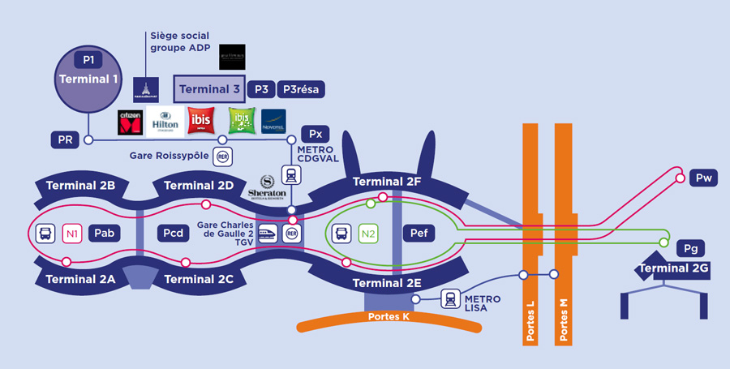
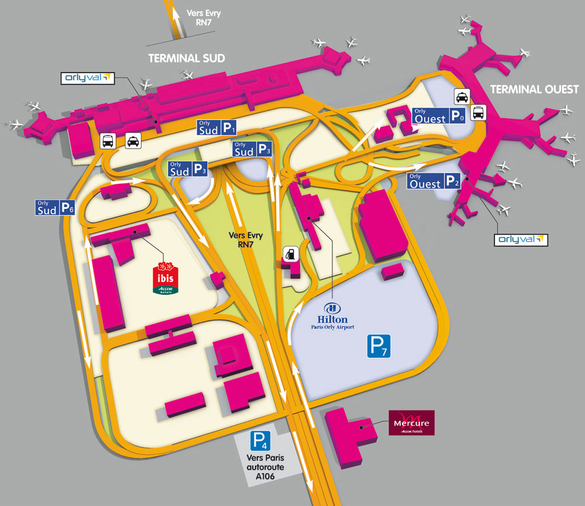
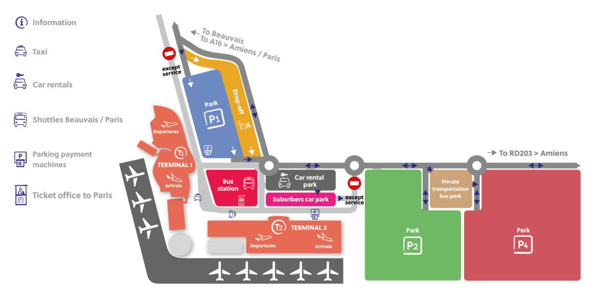

Cómo llegar del aeropuerto al centro de París
Para que no te pase como a mi y mi experiencia con los Parisinos, te dejo un poco de información sobre Cómo llegar del aeropuerto al centro de París.Paris cuenta con tres Aeropuertos por medio de los cuales se puede acceder a la capital de Francia. Cómo llegar del aeropuerto al centro de París puede ser una tarea difícil, pero te vamos a ayudar:
El aeropuerto Charles de Gaulle (también conocido como Roissy o CDG) es el principal aeropuerto de la nación gala. Está situado a unos 25 kilómetros del centro de París, en Roissy. Además cuenta con tres terminales. La primera (T1) es la más antigua. La segunda (T2) fue construida exclusivamente para Air France. Y la tercera terminal (T3), acoge principalmente vuelos chárter y low cost. Estas tres terminales están conectadas por el CDGVAL, un servicio de transporte ligero gratuito inaugurado en 2007.
El sistema de trenes regionales de París es el RER y la línea que pasa por él es la RER B. Hace parada tanto en la terminal T3 como en la terminal T2, pero ojo, si lo tomas en la T3 asegúrate de que vas dirección París. El trayecto tarda entre 25 y 30 minutos dependiendo del destino, entre los cuales están Gare du Nord, Châtelet – Les Halles, St-Michel Notre Dame y Denfert Rochereau. Funciona entre las 05:00 y las 00.00 hs con una frecuencia de 10 a 15 minutos. El precio del billete es de 10,30€ y para obtenerlo hay que dirigirse a las máquinas automáticas (en efectivo o con tarjeta). Además no te olvides de guardar el ticket, pues a la salida lo necesitarás. Además, ese mismo billete te podrá servir para el metro durante un tiempo de dos horas desde la primera validación.
Realiza el traslado desde cualquiera de las terminales hasta la parada en Rue Scribe y Rue Auber frente a la estación de Metro Opera (líneas 3,7,8 y 9 y RER A). El trayecto dura un poco menos de una hora, con salidas desde las 6:00 a las 0:30 hs y una frecuencia de 15 a 20 minutos. El costo es de 12,00 € y se adquiere en maquinas expendedoras, también sobre el bus con un pago adicional.
Este servicio tiene dos líneas (línea 2 y línea 4) que conectan Charles de Gaulle (T1 y T2) con varios puntos de la ciudad. Línea 2 a Torre Eiffel con paradas en Porte Maillot / Palais des Congrès y Etoile / Champs-Elysées. Tiene parada en la T1 y varias en diferentes salidas de la T2. Los billetes deben comprarse online y no llevan fecha de viaje, teniendo así una validez de un año. Pasan con una frecuencia de 30 minutos. El precio es de 18€ solo ida, la duración es de 60 a 70 minutos. Además la línea 4 a Gare de Montparnasse con parada en Gare de Lyon idéntica consideraciones que la línea 2.
La línea 350, llega hasta la estación Gare de l’Est y la línea 351, cuyo destino final es la Place de la Nation. La tarifa a es de 6€ y su frecuencia es de entre 15-30 minutos. En el caso de la línea 350, sale el primer vehículo a las 6:05 de la mañana y el último a las 22:30 hs. Respecto a la línea 351, la duración del viaje es de 70-90 minutos.
Son los buses urbanos nocturnos. Las lineas que nos interesan son la N140 y la N143. Llegan hasta la Gare de L’Est y circulan cada 30 minutos entre las 00:00 y las 05:00. El trayecto dura una hora y tiene un coste de 8 €.
El taxi entre el Aeropuerto Charles de Gaulle y el centro de París tiene una tarifa fija: 50€ para ir a cualquier punto de la margen derecha, y 55€ para la margen izquierda, a los que hay que sumar un suplemento si se realiza el viaje en domingo, feriado o bien por la noche.
Ubicado a tan solo 12 km al sur de París, es el segundo aeropuerto en importancia de la ciudad, consta de dos terminales, la Terminal Sur y la Terminal Oeste, con un servicio gratuito entre ellas, las opciones para llegar al centro de París desde el Aeropuerto son las siguientes:
Las líneas que pasan cerca del aeropuerto son la RER B y RER C, entonces para llegar a ellas es necesario un medio de transporte adicional. Para el RER B hay que acceder a la estación Antony, la más cercana al aeropuerto de Orly. Tomando un tren automático que circula de 6:00 a 23:00 hs llamado Orlyval. El trayecto dura menos de 10 minutos hasta la estación Antony. Una vez allí puedes llegar a las estaciones de Nôtre Dame o Chatelet-Les Halles. El billete de Orlyval + RER B cuesta 12,05 € para adultos y 6€ para niños. El viaje hasta el centro de París dura unos 35 minutos. El horario es de 6:00 hs a 23:35 hs Si prefieres la línea RER C, puedes tomar el autobús GO C Paris desde las dos terminales de Orly hasta la estación Pont de Rungis. El viaje dura apenas 10 minutos. Desde allí llegarás al centro en unos 35 minutos. El billete combinado de bus y RER cuesta 6,50 € (la mitad para niños). Tiene un horario muy amplio, desde las 4:40hs hasta casi la 1hs. Las paradas del RER C son tan céntricas como las del RER B, así que económicamente esta opción es mejor que la anterior.
Existen opciones para llegar a París por este medio y ellas son: Orly Bus Si tu alojamiento es en el sur de París te será más conveniente tomar este bus que va del aeropuerto de Orly a la estación Denfert-Rochereau en una media hora. Allí puedes conectar con el RER B o las líneas 4 y 6 del metro. El billete cuesta 8 Euros . El Orlybus tiene parada en las dos terminales de Orly, con una frecuencia de paso de unos 10 minutos. Funciona de 5:30hs hasta la medianoche. Le Bus Direct Si buscas la comodidad de no tener que hacer ningún transbordo podrías tomar la línea 1 de Le Bus Direct. Conecta el aeropuerto de Orly con Gare de Montparnasse, Torre Eiffel, Trocadéro y Champs Elysées. El billete cuesta 12€ para adultos y 7€ para niños de 4 a 11 años. Puedes comprar los billetes online y mostrarlos en el móvil. Los autobuses circulan cada 20 minutos de 4:50h a 22:30h desde las dos terminales de Orly. De la Puerta D (Terminal Oeste) y Puerta L (Terminal Sur) Autobús de la RAPT La 183 pasa solo por la Terminal Sur y llega hasta la estación Porte de Choisy en unos 40 minutos con un costo de 2€ . Allí puedes acceder a la línea 7 del Metro y a la línea T3 de tranvía, su frecuencia es de 30 minutos y poseé una amplia gama de horario. Bus Noctilien Es el servicio de autobuses nocturnos que funcionan desde las 00:30 a las 05:30hs. Los autobuses que pasan por Orly son la línea N22 (Paris-Châtelet), N31 y N131 (Gare de Lyon), y N144 (Gare de Paris-Est).
Es una buena forma de llegar al centro. Entonces el tranvía T7 conecta el aeropuerto de Orly con la estación Villejuif-Louis Aragon desde donde se puede tomar la línea 7 de metro. Tiene un horario de 05:30 a 00:30 hs pasando con una frecuencia de 5 – 10 minutos. El tiempo estimado hasta el centro de París es de 45 minutos. El precio total sería de 3,80€.
Los trayectos en taxi desde Orly al centro de París cuestan 30€ hasta cualquier punto de la margen izquierda y 35€ hasta cualquier punto de la margen derecha del Sena, a los que hay que sumar un suplemento si se realiza el viaje en domingo o festivo, o bien en horario nocturno.
Si llegas a Paris por medio de una Aerolínea Low Cost lo más probable que llegues a ese Aeropuerto que se encuentra a 80 Km al noroeste de Paris. Cómo llegar del aeropuerto al centro de París en este caso es mas complicado pero siempre se puede.
No hay conexión de tren directa entre París y el Aeropuerto de Beauvais. Tendrás que desplazarte hasta la localidad de Beauvais, o bien en taxi (15€) o bus (línea 12), y allí subir al primer tren que lleve hasta Gare du Nord. Es una opción lenta y más costosa, por lo que no la recomendamos.
Los autobuses salen entre 15 y 30 minutos después de la llegada de cada vuelo (incluso si el vuelo viene con retraso) y aseguran plazas para todos los pasajeros. Sale desde un punto entre las dos terminales, a un costado de la Terminal 1 y su parada en París la realiza en un estacionamiento de autobuses llamado Boulevard Pershing, próximo al Hotel Concorde-La Fayette y cerca del Arco del Triunfo. Aquí se encuentra la estación Porte Maillot, conectada a la línea 1 de metro y al RER C. El precio del billete es e 17€ si se compra en el momento y de 15,90€ haciéndolo a través de su web. Si optas por la primera opción, los billetes se pueden comprar en el área de llegadas de la Terminal 1 y 2, en la ventanilla detrás de la Terminal 1 y en las máquinas automáticas. El recorrido es de aproximadamente 1 hora y 15 minutos.
El trayecto en taxi desde el Aeropuerto de Beauvais hasta París cuesta 170€ de día y 210€ de noche o un domingo o festivo. El trayecto dura entre una hora y una hora y media. Si prefieres tomar un Uber, el precio ronda los 120-160€ . En conclusión, estas fueron las diferentes opciones de cómo llegar del aeropuerto al centro de París. Una vez que llegaste y no sabes que hacer, también te doy una manito. Que hacer 3 días en París.